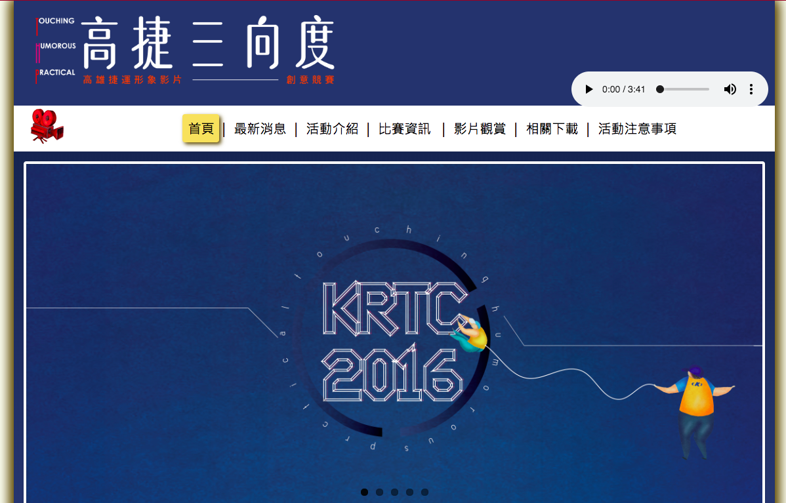
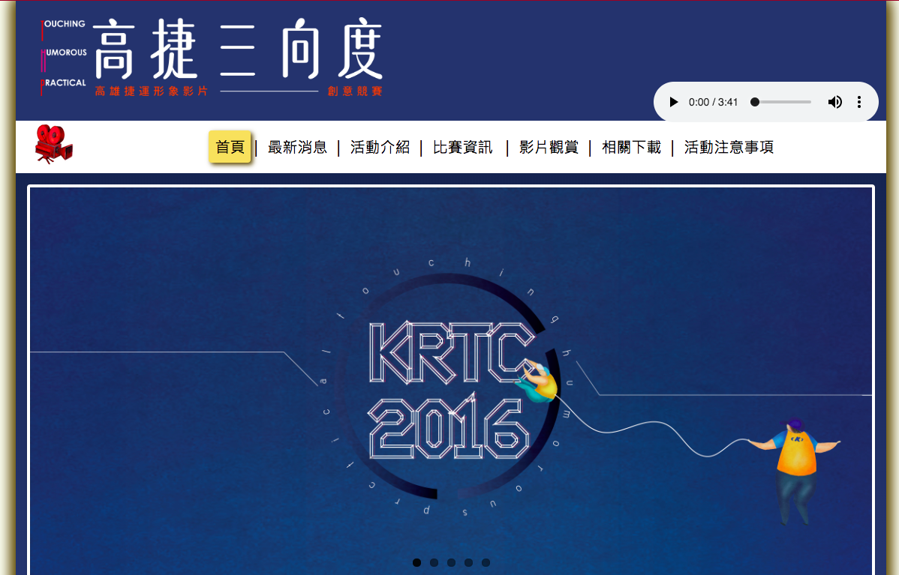

Hi! I'm Wei Cheng
A graduate student studying at iSchool
at University of Texas at Austin.
I have 3+ years frontend develop experience,
now I'm focusing on
User Experience Design.
learn more about Wei:
A graduate student studying at iSchool
at University of Texas at Austin.
I have 3+ years frontend develop experience,
now I'm focusing on
User Experience Design.
I have 3+ years frontend develop experience, I am familiar with app development, web frontend development, database management in SQL, System Analysis and Design Methods. I am now interested in UI/UX design.

I like to try different design to create products that are interesting but useful. Check out my ART!

Being a UX designer, it is important to listen to users and understand their needs.
I like to take challenge and solve problems that are related to people's life. Visit my Design Diary too see more.

This a term project for MIS301 : System Analysis and Design Course at NSYSU MIS department, lasted for one semester. I collaborated with a start-up company called Adventrip.
There are 6 people in my group, I acted as the user interface designer and developer.
Swift3, Xcode, Sketch
In Home page, users can simply click the join button and log in, the id is corresponding to each mobile device.
In Login page, users can customized avatar and username. User can add a new group map or join an exist one by entering the special number.
On Travel map, all members' position are shown on the map according to each GPS location. There is a chat space for all members to send text or images.
FamiFilm is the graduation capstone project for Information Management Department, National Sun Yat-sen University, lasted for 9 months.
This website is customized for Eco-Mobility World Festival. Users can uploaded images to the web service ,and the imbedded google map can show the image on the street scene based on each location.
HTML, CSS, javascript
I am responsible for communicate with back-end developers and the visual designer, turning visual design into frontend code.
 

Kaohsiung Rapid Transit Corporation held a corporate image filming competition in 2016, and they need a online voting system including the rules and sign up information of the competition.
This Unity 2D game was made in a 2 days hackathon competition of Department of Information Management. I did the game scene design and the user interface design.